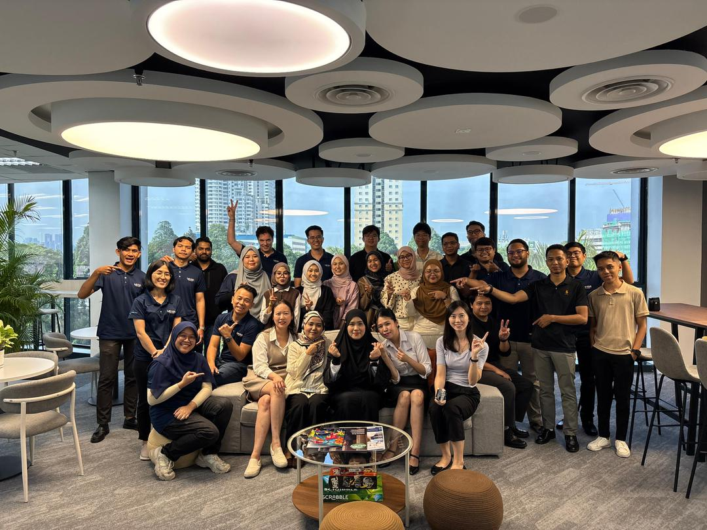

In conclusion, the industrial training successfully provided valuable exposure to the real working environment in the field of Information Technology support and system administration. Throughout the internship period, various technical tasks and troubleshooting activities were carried out, allowing practical knowledge gained during academic studies to be applied in real situations.
The training experience improved technical skills in laptop deployment, software installation, Active Directory management, network troubleshooting, printer configuration, and enterprise system support. In addition, communication and problem-solving skills were strengthened through interactions with users and team members while resolving technical issues efficiently.
Furthermore, the internship enhanced understanding of workplace responsibilities, teamwork, time management, and professional ethics required in the IT industry. The opportunity to work with enterprise-level systems and support tools also increased confidence in handling technical operations and user support tasks.
Overall, this industrial training program was highly beneficial in developing both technical and interpersonal skills, while also preparing for future career opportunities in the Information Technology field.
It is recommended that future industrial training students continue to improve their technical and communication skills to adapt effectively to the working environment. Students should also take initiative in learning new technologies, troubleshooting methods, and enterprise systems to strengthen their practical knowledge and problem-solving abilities.
In addition, organizations are encouraged to provide more hands-on opportunities and exposure to real IT operations so that trainees can further enhance their technical competencies and professional experience in the Information Technology field.
Leviat Sdn Bhd Official Website.
Visit Website